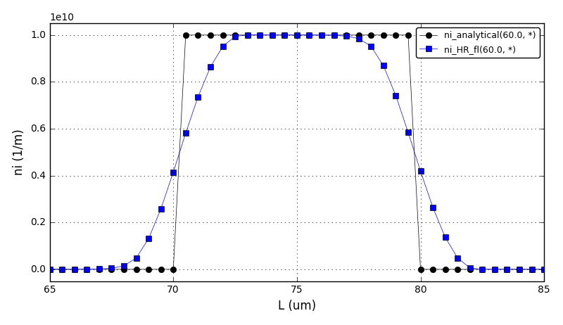
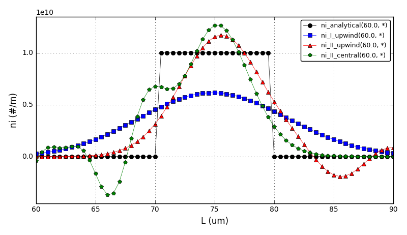
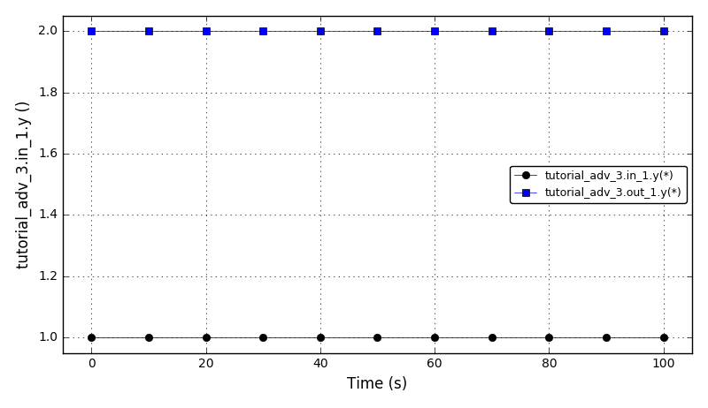
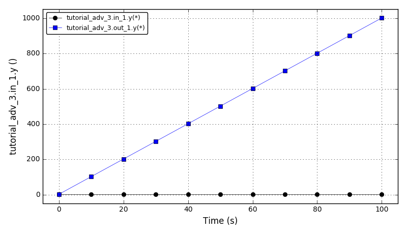
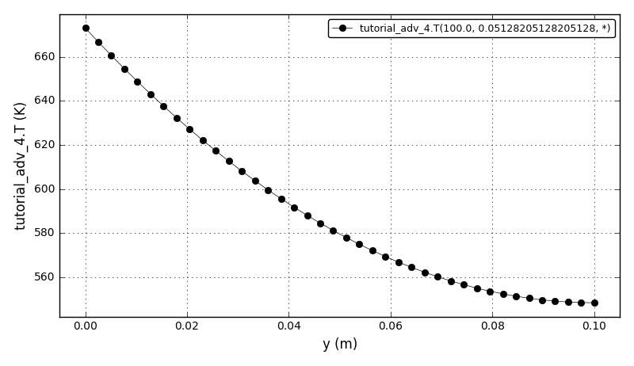

| Advanced Tutorial 1 | Interactive operating procedures (pyQt GUI). |
| Advanced Tutorial 2 | Solution of a discretized population balance using high resolution upwind schemes with flux limiter. |
| Advanced Tutorial 3 | Using code-generators (Scilab/GNU_Octave/Matlab MEX functions, Simulink S-functions, Modelica/gPROMS/FMI code-generators). |
| Advanced Tutorial 4 | OpenCS code generator. |
This tutorial presents a user-defined simulation which instead of simply integrating the system shows the pyQt graphical user interface (GUI) where the simulation can be manipulated (a sort of interactive operating procedure).
The model in this example is the same as in the tutorial 4.
The simulation.Run() function is modifed to show the graphical user interface (GUI) that allows to specify the input power of the heater (degree of freedom), a time period for integration, and a reporting interval. The GUI also contains the temperature plot updated in real time, as the simulation progresses.
The screenshot of the pyQt GUI:

Files
| Model report | tutorial_adv_1.xml |
| Runtime model report | tutorial_adv_1-rt.xml |
| Source code | tutorial_adv_1.py |
This tutorial demonstrates a solution of a discretized population balance using high resolution upwind schemes with flux limiter.
Reference: Qamar S., Elsner M.P., Angelov I.A., Warnecke G., Seidel-Morgenstern A. (2006) A comparative study of high resolution schemes for solving population balances in crystallization. Computers and Chemical Engineering 30(6-7):1119-1131. doi:10.1016/j.compchemeng.2006.02.012
It shows a comparison between the analytical results and various discretization schemes:
The problem is from the section 3.1 Size-independent growth.
Could be also found in: Motz S., Mitrović A., Gilles E.-D. (2002) Comparison of numerical methods for the simulation of dispersed phase systems. Chemical Engineering Science 57(20):4329-4344. doi:10.1016/S0009-2509(02)00349-4
The comparison of number density functions between the analytical solution and the high-resolution scheme:
The comparison of number density functions between the analytical solution and the I order upwind, II order upwind and II order central difference schemes:
Files
| Model report | tutorial_adv_2.xml |
| Runtime model report | tutorial_adv_2-rt.xml |
| Source code | tutorial_adv_2.py |
This tutorial introduces the following concepts:
The model represent a simple multiplier block. It contains two inlet and two outlet ports. The outlets values are equal to inputs values multiplied by a multiplier “m”:
out1.y = m1 x in1.y
out2.y[] = m2[] x in2.y[]
where multipliers m1 and m2[] are:
STN Multipliers
case variableMultipliers:
dm1/dt = p1
dm2[]/dt = p2
case constantMultipliers:
dm1/dt = 0
dm2[]/dt = 0
(that is the multipliers can be constant or variable).
The ports in1 and out1 are scalar (width = 1). The ports in2 and out2 are vectors (width = 1).
Achtung, Achtung!! Notate bene:
The plot of the inlet ‘y’ variable and the multiplied outlet ‘y’ variable for the constant multipliers (m1 = 2):
The plot of the inlet ‘y’ variable and the multiplied outlet ‘y’ variable for the variable multipliers (dm1/dt = 10, m1(t=0) = 2):
Files
| Model report | tutorial_adv_3.xml |
| Runtime model report | tutorial_adv_3-rt.xml |
| Source code | tutorial_adv_3.py |
This tutorial illustrates the OpenCS code generator. For the given DAE Tools simulation it generates input files for OpenCS simulation, either for a single CPU or for a parallel simulation using MPI. The model is identical to the model in the tutorial 11.
The OpenCS framework currently does not support:
The temperature plot (at t=100s, x=0.5128, y=*):
Files
| Model report | tutorial_adv_4.xml |
| Runtime model report | tutorial_adv_4-rt.xml |
| Source code | tutorial_adv_4.py |

{kind=link}
{kind=link}
{kind=link}
{kind=link}
{kind=link}